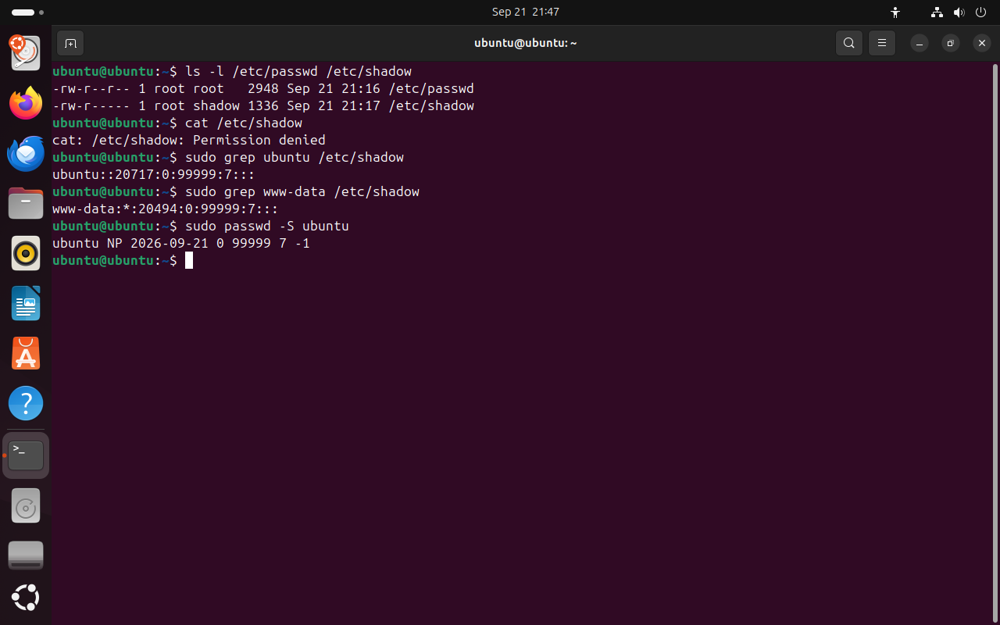

Часть 2 из 7
Пароли и файл /etc/shadow
В этой части разберём, почему пароли хранятся отдельно от учётных записей, что записано в /etc/shadow и как система хранит пароль, не храня его самого.
2.1 Почему пароли хранятся отдельно
Файл /etc/passwd должны читать все программы: ls -l по нему превращает UID владельца в имя, а id выводит имена групп. Поэтому права на него открывают чтение всем пользователям. В ранних версиях Unix во втором поле этого файла хранился хеш пароля, и любой пользователь мог скопировать хеши и подбирать к ним пароли на своём компьютере.
Чтобы закрыть эту возможность, хеши перенесли в отдельный файл /etc/shadow. Читать его может только root и программы проверки паролей из группы shadow. В /etc/passwd на месте пароля осталась буква x — отметка «пароль в shadow».
Права доступа в первом столбце ls -l записаны тремя тройками символов: для владельца, для группы файла и для всех остальных. r — чтение, w — запись, x — выполнение, прочерк — права нет. У /etc/passwd права rw-r--r--: владелец root читает и пишет, остальные только читают. У /etc/shadow права rw-r-----: у остальных пользователей прав нет.
| Файл | Права | Кто читает |
|---|---|---|
/etc/passwd | rw-r--r--, группа root | все пользователи |
/etc/shadow | rw-r-----, группа shadow | root и участники группы shadow |
ls -l /etc/passwd /etc/shadow# сравнить правачто делает
Что делает команда. Выводит права, владельца и группу файлов passwd и shadow рядом.
По частям:
ls- вывести содержимое каталога
-l- подробный список: права, владелец, группа, размер
/etc/passwd- что показать (абсолютный путь)
/etc/shadow- что показать (абсолютный путь)
cat /etc/shadow# от имени обычного пользователячто делает
Что делает команда. Пытается вывести /etc/shadow от имени обычного пользователя; доступа нет.
По частям:
cat- вывести содержимое файла
/etc/shadow- какой файл вывести (абсолютный путь)
- 1passwd: остальные могут читать (r--)
- 2shadow: у остальных прав нет (---)
- 3группа shadow — программы проверки паролей
- 4обычный пользователь shadow прочитать не может
{kind=link}

Весь снимок ↗Права на /etc/passwd и /etc/shadow и отказ при чтении shadow.
Что показывает снимок. /etc/passwd открыт для чтения всем, /etc/shadow — только root и группе shadow; обычному пользователю shadow не отдаётся.
Где это пригодится. Права на файлы с секретами — ключами, паролями баз данных, токенами — настраивают так же: владелец читает, остальным доступ закрыт.
2.2 Хеш пароля
Система не хранит сам пароль. При смене пароля к нему добавляется соль — случайная строка, — и от результата вычисляется хеш: строка фиксированной длины, по которой нельзя восстановить исходный пароль. При входе система берёт введённый пароль, вычисляет хеш с той же солью и сравнивает результат с записанным. Совпали — пароль верный.
Соль нужна, чтобы одинаковые пароли давали разные хеши. Если две учётные записи получили одинаковый пароль, соль у них разная, и хеши тоже получаются разными. Поэтому по совпадению хешей нельзя узнать, у кого одинаковые пароли.
Хеш похож на отпечаток пальца: по отпечатку можно проверить, тот ли это человек, но восстановить по нему самого человека нельзя.
Второе поле строки /etc/shadow состоит из частей, разделённых знаком $. Для примера взято поле учебной учётной записи anna, пароль которой задан командой passwd.
| Часть поля | Пример | Значение |
|---|---|---|
| алгоритм | $y$ | yescrypt — алгоритм по умолчанию в Ubuntu 24.04 |
| параметры | j9T | сложность вычисления хеша |
| соль | g7zEi3hrM12Bp6AjRYdSA/ | случайная строка, своя для каждого пароля |
| хеш | hloIoQta77… | результат преобразования пароля с солью |
2.3 Поля /etc/shadow
Строка /etc/shadow состоит из девяти полей. Первое — имя учётной записи, второе — хеш пароля. Остальные поля задают сроки: когда пароль менялся последний раз и как часто его нужно менять. Даты записаны номером дня, отсчитанным от 1 января 1970 года.
| Значение во втором поле | Что означает |
|---|---|
$y$… | хеш пароля: вход по паролю возможен |
| пусто | пароль не задан; в Live-сеансе у ubuntu поле пустое |
* | пароля нет и войти по паролю нельзя: так у служебных записей |
! в начале | пароль заблокирован командой passwd -l |
Прочитать /etc/shadow можно только с правами администратора, поэтому команды ниже начинаются с sudo. Команда grep отбирает строки, в которых встречается слово. Команда passwd -S выводит состояние пароля кратко: имя, код состояния (P — пароль задан, NP — пароля нет, L — заблокирован), дату смены и сроки.
sudo grep ubuntu /etc/shadow# строка пользователя ubuntuчто делает
Что делает команда. С правами root выводит строку /etc/shadow пользователя ubuntu.
По частям:
sudo- выполнить команду от имени другого пользователя, по умолчанию root
grep- отобрать строки, в которых есть образец
ubuntu- образец
/etc/shadow- в каком файле искать (абсолютный путь)
sudo grep www-data /etc/shadow# строка служебной записичто делает
Что делает команда. С правами root выводит строку /etc/shadow служебной записи www-data.
По частям:
sudo- выполнить команду от имени другого пользователя, по умолчанию root
grep- отобрать строки, в которых есть образец
www-data- образец
/etc/shadow- в каком файле искать (абсолютный путь)
sudo passwd -S ubuntu# состояние паролячто делает
Что делает команда. Выводит состояние пароля ubuntu: задан ли пароль, дату смены и сроки.
По частям:
sudo- выполнить команду от имени другого пользователя, по умолчанию root
passwd- задать пароль или показать его состояние
-S- показать состояние пароля
ubuntu- чей пароль
- 1имя учётной записи
- 2поле пароля пусто: в Live-сеансе пароль не задан
- 3день последней смены: 20717-й день с 1 января 1970 года
- 4минимум дней между сменами
- 5максимум дней до обязательной смены
- 6за сколько дней предупреждать
- 7* — вход по паролю невозможен
- 8NP — пароля нет
Поля /etc/shadow у пользователя Live-сеанса и у служебной записи.
Что показывает снимок. У пользователя Live-сеанса поле пароля пусто и состояние NP; у служебной записи www-data в поле пароля стоит *.
Где это пригодится. passwd -S быстро показывает, задан ли пароль и не заблокирована ли учётная запись, без чтения /etc/shadow глазами.
Итоги части 2
/etc/passwdчитают все, поэтому хеши паролей хранятся в/etc/shadow, закрытом от обычных пользователей.- Права в
ls -l— три тройкиrwx: владелец, группа, остальные. - Система хранит хеш пароля с солью; восстановить пароль по хешу нельзя.
- Второе поле shadow: хеш, пусто,
*или!;passwd -Sвыводит состояние пароля.
В отчётСнимок ls -l /etc/passwd /etc/shadow с объяснением разницы в правах.